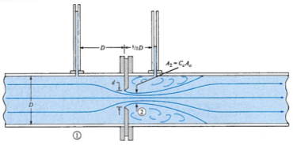
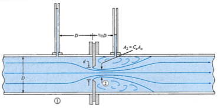
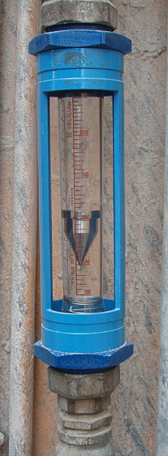
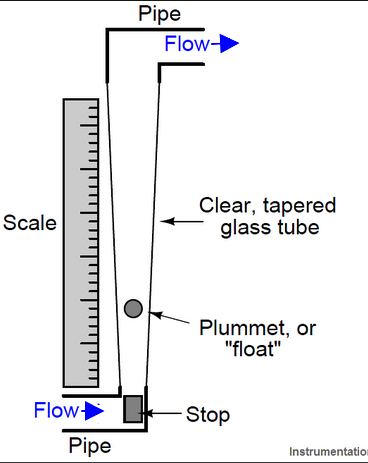
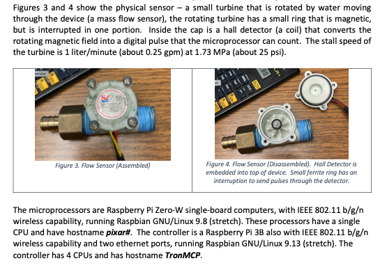

3. Flow Measurement#
Flowrate can be measured indirectly with venturi meter, orifice plate meter and rotameter by a combination of continuity, the modified Bernoulli equation, and mass flowrate concepts.
They are be combined together to make the flow measurement apparatus below:.
Venturi Meter#
The venturi meter is a combination of a converging tube, a throat and a diverging tube. The discharge of liquid is calculated by measuring the pressure differential between the inlet and the throat which is caused by the differences in diameters. The shape of the venturi is designed to minimize energy loss in the device.


Using continunity
Defninition of discharge and modified Bernoulli equation is:
Orifice Plate Meter#
An orifice meter is a round opening in a plate. This device is then put within the pipe so that it is perpendicular to the direction of flow.
 

Externally they look like a very short section of pipe between two flanges as in the photograph above
Discharge is determined by measuring the head loss between the upstream and downstream of the device.
Head loss can be written in terms of a coefficient \(K\), which varies with the type of the orifice meter.
First consider a modified Bernoulli equation across the orifice plate
Then continunity to arrive at a structure to estimate discharge
Rotameter#
The rotameter measures flowrate by detecting the position of the float. It is a vertical tapered tube with a moveable plug inside. It is one kind of variable-area flow-meter.
 
Because of the greater flow area at the top, velocity is lower than the bottom of the tapered tube. The flowing fluid lifts the plug up by the drag force (just like Stoke’s Law) created by the fluid. The weight of the plug acts downward. The equilibrium position of the plug depends on the flowrate which is indicative of the rate with which the fluid is passing.
Mass Flow Meters#
A mass flow meter directly measures the flow by means of a near zero-inertia turbine that is rotated by liquid moving through the device (a mass flow sensor), the rotating turbine has a small ring that is magnetic, but is interrupted in one portion. Inside the cap is a hall detector (a coil) that converts the rotating magnetic field into a digital pulse that the microprocessor can count. These scale in size to very large devices but the general principle of operation is the same. The figure below shows a small (20L/minute) flowmeter.
